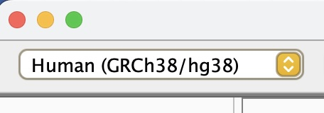
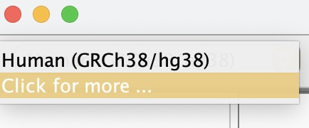
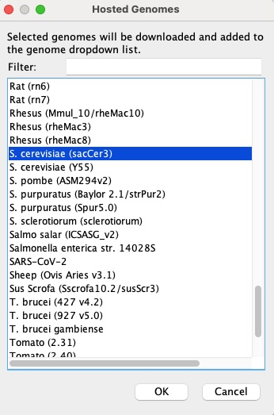
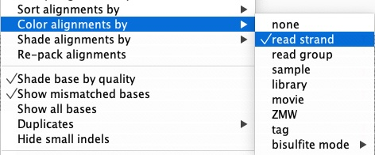
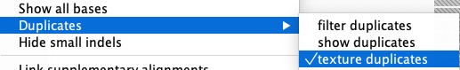
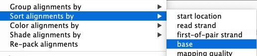

23 Lab09: IGV Genome Visualization Lab Activity
23.1 Overview
Throughout this course, you have been building a complete NGS variant-calling workflow using a real experimental evolution dataset. In Lab 4, you downloaded whole-genome sequencing reads from the Saccharomyces cerevisiae population SRR16936911, trimmed them, and aligned them to the sacCer3 reference genome using BWA to produce a sorted BAM file. In Lab 7, you ran the GATK best practices pipeline on those alignments: you marked PCR duplicates, called variants with HaplotypeCaller, examined quality-score distributions using VCFtools density plots, and applied hard filters to separate high-confidence SNPs from technical noise. Together, those two labs took you from raw FASTQ files all the way to a filtered VCF.
This lab is the final step of that journey. Here you will load the same files—the pre-filtering BAM, the duplicate-marked BAM, and the unfiltered VCF—into the Integrative Genomics Viewer (IGV) and look at the raw read evidence underneath each variant call. As discussed in Chapter 10, automated filtering is powerful but imperfect: visual inspection of alignments at candidate variant sites remains an essential validation step, letting you recognize patterns such as strand bias, duplicate stacking, and low mapping quality that are difficult to catch with thresholds alone2. You will also connect the sequence changes you observe to the biological dataset described in Appendix C—a pooled yeast population that experienced hundreds of generations of selection—and reason about whether specific SNPs could represent adaptive allele-frequency shifts.
By the end of this lab you will be able to:
- Load and configure a multi-track IGV session combining a reference genome, BAM alignment files, and a VCF.
- Distinguish high-confidence SNPs from likely artifacts based on visual read evidence (strand balance, mapping quality, duplicate patterns, base quality).
- Apply Human Genome Variation Society (HGVS) standardized variant nomenclature to describe DNA and protein sequence changes.
- Interpret whether a called SNP falls in a coding region and assess its potential amino acid and functional consequences.
- Reflect on how your filtering choices in Lab 7 relate to what you see in the read pileups.
23.2 Step 1 — Download and Install IGV
The software IGV is available from the Broad Institute (which also hosts GATK). IGV stands for Integrative Genomics Viewer and allows you to upload a variety of genome file formats to view on your desktop machine. It runs on Java, so you may need to update your version of Java to run it.
Download IGV from here (make sure to scroll to the appropriate distribution based on your OS). Linux users will download the binary distribution, which can be launched directly from the terminal using Java.
Follow the instructions to install the software on your main OS.
Make sure after you install it that it loads properly before getting started on the exercise below.
23.3 Step 2 — Load Data into IGV
The goal of this step is to load the datasets we have worked with in Labs 4 and 7 into IGV so we can visualize the variants and the read evidence that supports them. Recall from Appendix C that these files represent a single S. cerevisiae population sequenced from a pooled, evolve-and-resequence experiment; because the sample is pooled rather than a single diploid individual, you will see a range of allele frequencies at variant sites rather than clean 50/100% het/hom patterns.
Download files from IGV_files.zip from Canvas.
Open IGV. Refer to the slides from this tutorial if needed throughout.
First, we need to load the genome file. At the top left, select the dropdown menu with the human genome and select the option “Click for more”.


From the pop-up menu, scroll to the genome for S. cerevisiae (sacCer3) and click OK to load it into the current session. This is the same sacCer3 reference (NCBI assembly R64) you indexed with BWA in Lab 4 and used for all downstream analyses.

Next, at the top left, select “File” and “Load from File” to import your raw sequence alignment (pre-filtering). The file should be named
SRR1693691.sorted.bamand have a corresponding index file namedSRR1693691.sorted.bam.bai. Make sure not to select the index, but only verify it exists in the same directory. IGV will search for it and give an error if it is not there.Repeat step 5 on the duplicate-marked BAM file (post-filtering). The file should be named
SRR1693691.markdup.bamand have a corresponding index file namedSRR1693691.markdup.bai. As discussed in Chapter 10, marking duplicates rather than removing them lets you see the flagged reads in IGV and verify that the duplicate-calling algorithm behaved reasonably.Finally, you will load the VCF file you generated (pre-filtering). At the top left, select “File” and “Load from File” to import the file
SRR1693691.SNPs.vcf.gz. This file does not have an index but should still load.Configure your view in the following ways:
In the sorted BAM panel, right-click and scroll to “Color alignments by” and in the pull-out menu, select “read strand”. This color-codes reads by forward and reverse, which is essential for detecting strand bias—a key artifact signal discussed in Chapter 10.

In the markdup BAM panel, right-click and scroll to “Duplicates” and select “texture duplicates”. This makes PCR and optical duplicates visually distinct rather than hiding them, so you can see how many reads at each site are flagged.

In the Sequence panel, click to show the standard translation panel of the amino acids. This will allow you to determine immediately whether a coding SNP changes the amino acid sequence.
<img width=“50%” src=images/Lab09_Fig_translation.jpg alt=“Screenshot of IGV window with toggle for amino acid translation.>
When you are done configuring your session, save it so you can return to this configuration in the future. Under “File” select “Save Session” and name your session Lab 9.
23.4 Step 3 — Examine Variants in Depth
The goal of this step is to navigate to specific variants and evaluate the raw read evidence that supports—or does not support—each as a real, biologically relevant SNP. This mirrors the visual validation workflow described in Chapter 10, where IGV is used to recognize artifact patterns (duplicate stacking, strand-biased reads, low mapping quality, base-end clustering) versus signatures of a high-confidence true variant (balanced strands, high MQ, consistent base quality throughout reads).
Now that you have the genome and two BAM tracks loaded into IGV, use the tutorial slides as a guide and navigate to the following regions. Zoom in enough to see individual reads and any SNP variants validated in your VCF:
- Region 1: chrII:598117–598156
- Region 2: chrV:430725–431072
- Region 3: chrXV:468250–468449
For each region, answer: how many apparent mismatches (potential variants) are visible in the raw sorted BAM? How many remain in the markdup BAM? And how many of those are called in the VCF? Think about why these three numbers differ.
For each variant present in the VCF within each window, assess the read evidence:
- What is the depth of coverage at that site?
- Are reads supporting the alternate allele present on both forward and reverse strands?
- Are the supporting bases near the middle of reads (high confidence) or clustered at read ends (potential artifact)?
To better evaluate, sort the reads by base at each variant position:

Are there any apparent mismatches (or potential sequencing errors) in the BAM that are not “called” as variants in the VCF? Which features of those sites—coverage, strand distribution, read position, base quality—might explain why HaplotypeCaller did not “call” them as variants?
For the variants that are called in the VCF, based on the visual evidence (strand balance, mapping quality, duplicate patterns), do you expect that each variant “Passed” the hard filters you applied at the end of Lab 7? Recall the key thresholds from Chapter 10: QD > 2.0, MQ ≥ 40, FS < 60, SOR < 3.0, and ReadPosRankSum > −8.0.
Pick one variant and test your prediction by using
lesson the command line to search for that chromosome and position in your filtered VCF file.Does the filtered VCF support or reject your prediction? Based on this comparison, would you adjust any of your filtering thresholds? In what direction, and why?
For each called SNP in the VCF, return to IGV: is the SNP located within a protein-coding exon? Use the gene annotation track and amino acid translation track to check.
If a SNP falls in a coding region, does the nucleotide change alter the amino acid? What effect—if any—do you think this amino acid change might have on the function of the gene? Remember that variants rising to high frequency in this experimental evolution dataset may reflect adaptive changes selected over hundreds of generations.
Using the HGVS naming conventions introduced in Chapter 5, write out the sequence changes for each variant you identified:
- A prefix of
g.is used for a genomic sequence change (e.g., g.69A>T for an A-to-T substitution at genomic position 69). - A prefix of
p.is used for a protein sequence change using the one-letter amino acid code (e.g., p.K23Y for a lysine-to-tyrosine substitution at position 23 in the protein). - If the SNP is synonymous (silent), note that as well—synonymous changes are still described with
g.notation.
- A prefix of
Feel free to explore additional regions on your own:
- chrII:486633–487123
- chrV:553052–553399
- chrXIV:39075–39311
23.5 Deliverables
Upload the following to Canvas for a final grade:
- Screenshots of each of the three required regions showing your configured view (strand coloring, duplicate texturing, and translation track visible).
- Written answers to the questions in Step 3 (questions 2–9), clearly numbered.
- HGVS variant notation for each variant you identified in the three required regions (question 10), indicating both genomic (
g.) and, where applicable, protein (p.) level changes.
IGV is a powerful way to visually validate specific variants and develop intuition for what real biological signal looks like versus noise. As you complete this lab, you are closing the loop on the entire variant-calling workflow you have built across this course: from raw FASTQ reads in Lab 4, through alignment and GATK processing in Lab 7, to biological interpretation here. The ability to move fluidly between a filtered VCF, the raw read alignments behind it, and the gene annotation context is a core skill in modern genomics.